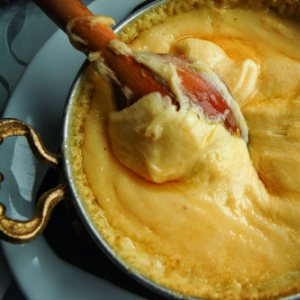

Kuymak, Puçuko ve Diğer Lezzetleri
Artvin mutfağının lezzet sırrı aslında muhteşem yeşil doğasında yetişen bitkilerin kullanılan etlere kadar işleyen aromalı tatlarında gizli olabilir. Artvin mutfağının en belirgin lezzet unsurları çay, fındık, pirinç, karalahana ve hamsi. Kuymak en çok bilinen nefis bir kahvaltılık, kurutulmuş taze fasulyeden yapılan “Puçuko” ise özel bir yemek. Hamur işleri, özel çorbaları ve etli yemeklerini de mutlaka deneyin!
